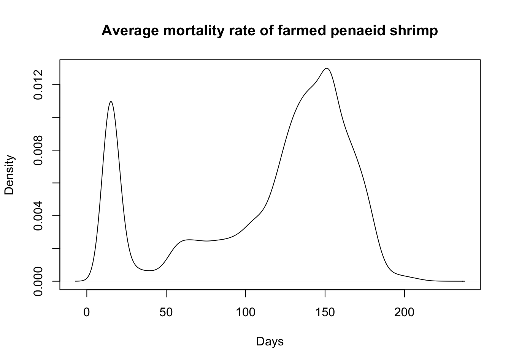
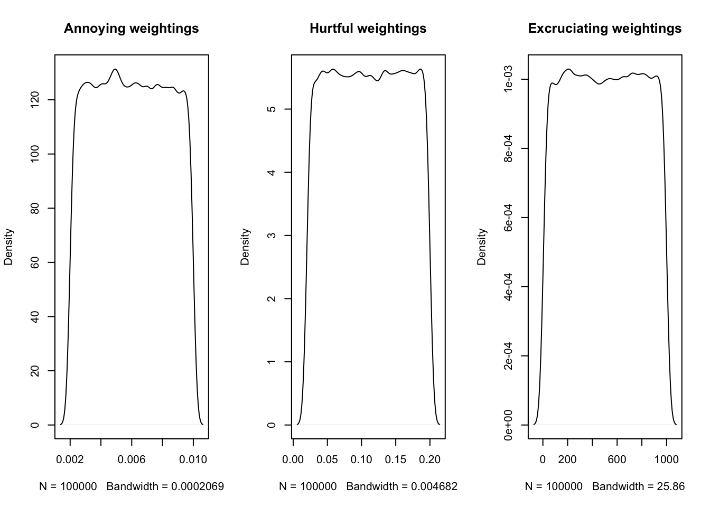

library(tidyverse)Warning: package 'ggplot2' was built under R version 4.3.2library(truncnorm)
library(extraDistr)
library(EnvStats)
library(janitor)
library(kde1d)
library(kableExtra)
set.seed(123)
n<-100000We begin by uploading packages and writing functions that we will reuse. By convention, whenever we sample distributions, we will use 100,000 draws. We set the randomization seed to 123 for replicability.
library(tidyverse)Warning: package 'ggplot2' was built under R version 4.3.2library(truncnorm)
library(extraDistr)
library(EnvStats)
library(janitor)
library(kde1d)
library(kableExtra)
set.seed(123)
n<-100000We create a function to sample from the beta distribution, which we use for all prevalence estimates. To sample from the beta distribution we need to be able to find a good standard deviation, based on our estimated ranges and mean. We also write a function to perform a binary search to find a standard deviation.
# sample from the beta distribution by specifying the mean proportion an its standard deviation
sample_beta <- function(mean_val, sd_val) {
n <- 100000
# calculate alpha and beta parameters
var_val <- sd_val^2
alpha <- ((1 - mean_val) / var_val - 1 / mean_val) * mean_val^2
beta <- alpha * (1 / mean_val - 1)
# Check and adjust alpha and beta to ensure they are valid for the beta distribution
if (alpha <= 0 | beta <= 0) {
stop("Invalid shape parameters: alpha and beta must be greater than 0.")
}
# sample from beta distribution
return(rbeta(n, alpha, beta))
}
# find a good standard deviation for beta distributions for which we have mean and range estimates by using binary search
find_good_sd_binary <- function(mean_val,
fifth_percentile, ninety_fifth_percentile,
tol=0.001, sd_val=-1) {
# Set start value
if (sd_val == -1){
sd_val=0.2
}
# Check if the provided parameters are valid
if (sd_val^2 >= mean_val * (1 - mean_val)) {
stop("Invalid sd_val: sd_val^2 must be less than mean_val * (1 - mean_val).")
}
# Initialize the search range
lower_bound <- 0
upper_bound <- sqrt(mean_val * (1 - mean_val))
# Perform binary search to find the optimal sd_val
while (abs(upper_bound - lower_bound) > tol) {
sd_val <- (lower_bound + upper_bound) / 2
samples <- sample_beta(mean_val, sd_val)
prop_between_given_percentiles <- sum(
samples > fifth_percentile & samples < ninety_fifth_percentile) / length(samples)
if (abs(prop_between_given_percentiles - 0.9) < tol) {
return(sd_val)
} else if (prop_between_given_percentiles < 0.9) {
upper_bound <- sd_val
} else {
lower_bound <- sd_val
}
}
return((lower_bound + upper_bound) / 2)
}Next, we write functions to sample from the dirichlet distribution and the truncated log-normal distribution, which we use for estimating pain intensity and some durations of pain, respectively.
# sample from Dirichlet distribution
sample_dirichlet<-function(a=0, b=0, x=0, y=0){
if (sum(c(a, b, x, y)) != 100){
print("Arguments do not sum to 100! Their sum is: ")
print(sum(c(a, b, x, y)))
} else {
n <- 100000
non_zero_args = c(a, b, x, y)[c(a, b, x, y) != 0]
return(rdirichlet(n, non_zero_args))
}
}
# sample from truncated log-normal distribution
sample_trunclogn <- function(n_value, mean, sd, min_value, max_value){
trunclogn_dist<-rlnormTrunc(n = n_value, meanlog = log(mean^2 / sqrt(mean^2 + sd^2)),
sdlog = sqrt(log(1 + (sd^2/mean^2))),
min=min_value, max=max_value)
return(trunclogn_dist)
}Finally, we make a function to print tables of our results:
show_table=function(x){
kable(x, table.attr = 'data-quarto-disable-processing="true"') %>%
kableExtra::kable_styling(full_width=FALSE, position="center", font_size=12,
bootstrap_options = c("condensed"))
}There are four broad categories of shrimp farms: extensive, semi-intensive, intensive, and super-intensive.
Based on 2018 data from Boyd et al. (2021), and accounting for increasing intensification, we estimate the percentage of penaeid shrimp raised in different production systems as:
Although we assume these estimates are credible, we add in a modest amount of uncertainty to account for potential weaknesses in Boyd et al. (2018), changes that may have occurred since the survey was conducted, and because these proportions relate to the shrimp produced at the end of production—they do not account for individuals who die pre-slaughter.
# Define the expected proportions for each practice
ext_mean <- 0.112
semi_mean <- 0.164
int_mean <- 0.714
super_mean <- 0.01
sum(c(ext_mean,semi_mean,int_mean,super_mean))[1] 1# Sample from the Dirichlet distribution
prop_sample<-data.frame(sample_dirichlet(ext_mean*100, semi_mean*100,
int_mean*100, super_mean*100))
# we multiply by 100 to make the distributions less noisy
colnames(prop_sample)<-c("Ext", "Semi", "Int", "Super")
production_summarydist<-round(rbind((quantile(x =prop_sample[,1], probs = c(.05, .50, .95))),
(quantile(x =prop_sample[,2], probs = c(.05, .50, .95))),
(quantile(x =prop_sample[,3], probs = c(.05, .50, .95))),
(quantile(x =prop_sample[,4], probs = c(.05, .50, .95)))), 2)
row.names(production_summarydist)<-c("Extensive","Semi-Intensive","Intensive", "Super-Intensive")
production_summarydist 5% 50% 95%
Extensive 0.07 0.11 0.17
Semi-Intensive 0.11 0.16 0.23
Intensive 0.64 0.72 0.79
Super-Intensive 0.00 0.01 0.03We then estimate prevalence ranges and means, based on data where possible, and draw from the beta distribution. Where no data on the mean is available, we often set the mean to be the mid point of the estimated range. Where no data on the range is available we use the rough, subjective likelihood categories below:
For time, we always use hours as the unit. We base pain duration on the scientific literature where possible.
The average time spent in pain from any given welfare threat has to account for shrimp that die prematurely from that or other welfare threats, because this reduces how long shrimp can suffer from that threat in the aggregate.
If a threat is a one-off event in a shrimp’s life (e.g., slaughter), we just model estimated duration. Otherwise, if it occurs regularly, we often model duration as the pain caused to a shrimp per day, and then weight by an estimate of the average number of days lived by a shrimp (including those that die pre-slaughter). We can then also estimate the proportion of shrimp experiencing welfare threats that are life-stage specific (e.g., slaughter).
We use the estimates presented in Waldhorn and Autric’s (2023) Guesstimate model. Specifically, we use the mortality rate of each life stage multiplied by the mean number of days a shrimp lives given that they die in a certain life stage, and then weight these by the proportion of farmed shrimp each species accounts for.
Note: the guesstimate model re-samples each time it is opened so the figures you see may differ slightly from those used here.
To best sample from the Guesstimate data (especially the tails of the distributions) and to remove errors created by Guesstimate (e.g., negative values), we generated 100,000 synthetic samples for each of these, based off the original 5000 guesstimate samples. To do this, we use the kde1d function, which estimates a kernel density function from the 5000 samples, and the rkde1d function, which generates n (in our case 100,000) samples from the estimated kernel density.
# loading die on farms samples, taken from Guesstimate model
allspecies_dof_samp<-read.csv("../data/die_on_farm_samples.csv", header=TRUE, sep=",")
vannamei_dof<-allspecies_dof_samp$vannamei[allspecies_dof_samp$vannamei>0] %>% # Cell GZ in the Guesstimate model
# removing negative values created by Guesstimate
kde1d(xmin=0) %>% # running kde1d function and ensuring no values below 0 are created
rkde1d(100000,.) # creating 100,000 samples from the data
# repeat this for other taxa
monodon_dof<-allspecies_dof_samp$monodon[allspecies_dof_samp$monodon>0] %>% # Cell ES in the Guesstimate model
kde1d(xmin=0) %>%
rkde1d(100000,.)
otherpen_dof<-allspecies_dof_samp$other_pen[allspecies_dof_samp$other_pen>0] %>% # Cell NN in the Guesstimate model
kde1d(xmin=0) %>%
rkde1d(100000,.)Now we can calculate the proportion of farmed shrimp accounted for by each species for each of our 100,000 samples.
allspecies_dof<-cbind(vannamei_dof, monodon_dof, otherpen_dof) # combining the 100,000 samples for each species into a data frame
prop_allspecies<-as.data.frame(allspecies_dof) %>%
rowwise() %>%
mutate(van_prop=vannamei_dof/sum(vannamei_dof, monodon_dof, otherpen_dof), # calculating each sample as a proportion of the total shrimp, row-wise
mon_prop=monodon_dof/sum(vannamei_dof, monodon_dof, otherpen_dof),
otherpen_prop=otherpen_dof/sum(vannamei_dof, monodon_dof, otherpen_dof))
prop_allspecies_dof<-as.data.frame(prop_allspecies[,4:6]) # keeping only the proportions
saveRDS(allspecies_dof, file="../data/allspecies_dof.RData")
saveRDS(prop_allspecies_dof, file="../data/prop_allspecies_dof.RData")Next we load the data for the number of days lived by a shrimp, given that it dies within a certain life stage. The three life stages under consideration here are postlarval, juvenile-adult, and the days lived before slaughter, which we call the total farmed days.
# First load the data
vannamei_days_samp<-read.csv("../data/vannamei_days_lived.csv", header=TRUE,sep=",") # Cells TE, VO, XM, and QV in the Guesstimate model
monodon_days_samp<-read.csv("../data/monodon_days_lived.csv", header=TRUE, sep=",") # Cells MF, HI, OZ, and LW in the Guesstimate model
otherpen_days_samp<-read.csv("../data/otherpen_days_lived.csv", header=TRUE, sep=",") # Cells NQ, XV, DQ, and YY in the Guesstimate model
# Next make the 100,000 samples
# create empty data frame
vannamei_days_lived<-data.frame(postlarval=rep(NA, 100000),
juvenile.adult=rep(NA, 100000),
total.farmed=rep(NA, 100000))
# fill empty data frame with data simulated from Guesstimate data using kde1d function
vannamei_days_lived$postlarval<-vannamei_days_samp$postlarval %>%
kde1d() %>%
rkde1d(100000,.)
vannamei_days_lived$juvenile.adult<-vannamei_days_samp$juvenile.adult %>%
kde1d() %>%
rkde1d(100000,.)
# repeat for other species
monodon_days_lived<-data.frame(postlarval=rep(NA, 100000),
juvenile.adult=rep(NA, 100000),
total.farmed=rep(NA, 100000))
monodon_days_lived$postlarval<-monodon_days_samp$postlarval %>%
kde1d() %>%
rkde1d(100000,.)
monodon_days_lived$juvenile.adult<-monodon_days_samp$juvenile.adult[monodon_days_samp$juvenile.adult<214] %>%
kde1d(xmax=213.99) %>% # guesstimate produced some large samples over what we think is the maximum ongrowing length (see below) so we restrict to one day prior to the maximum ongrowing period (as this is the maximum age a juvenile--adult can be while still dying pre-slaughter)
rkde1d(100000,.)
otherpen_days_lived<-data.frame(postlarval=rep(NA, 100000),
juvenile.adult=rep(NA, 100000),
total.farmed=rep(NA, 100000))
otherpen_days_lived$postlarval<-otherpen_days_samp$postlarval %>%
kde1d() %>%
rkde1d(100000,.)
otherpen_days_lived$juvenile.adult<-otherpen_days_samp$juvenile.adult[otherpen_days_samp$juvenile.adult<153] %>%
kde1d(xmax=152.99) %>% # guesstimate produced some large samples over what we think is the maximum ongrowing length (see below) so we restrict to just prior to the maximum ongrowing period (as this is the maximum age a juvenile--adult can be while still dying pre-slaughter)
rkde1d(100000,.)Guesstimate produced a few large numbers of over one year for the total days farmed, which seems incorrect, so we remove these and restrict to:
The kde1d function will still produce a few samples just above this estimation.
vannamei_days_lived_total<-vannamei_days_samp$total_farmed_d[vannamei_days_samp$total_farmed_d<183]
vannamei_days_lived$total.farmed<-vannamei_days_lived_total %>%
kde1d() %>%
rkde1d(100000,.)
monodon_days_lived_total<-monodon_days_samp$total_farmed_d[monodon_days_samp$total_farmed_d<214]
monodon_days_lived$total.farmed<-monodon_days_lived_total %>%
kde1d() %>%
rkde1d(100000,.)
otherpen_days_lived_total<-otherpen_days_samp$total_farmed_d[otherpen_days_samp$total_farmed_d<153]
otherpen_days_lived$total.farmed<-otherpen_days_lived_total %>%
kde1d() %>%
rkde1d(100000,.)Now we load the data for the mortality rates samples, then make the 100,000 samples.
vannamei_mort_samp<-read.csv("../data/vannamei_mortality_rates.csv",header=TRUE, sep=",") # Cells UY, UJ, and TF in the Guesstimate model
monodon_mort_samp<-read.csv("../data/monodon_mortality_rates.csv", header=TRUE, sep=",") # Cells ZA, XZ, and YR in the Guesstimate model
otherpen_mort_samp<-read.csv("../data/otherpen_mortality_rates.csv", header=TRUE,sep=",")
# Cells MU, UQ, and XJ in the Guesstimate model
vannamei_stage_prob<-data.frame(postlarval=rep(NA, 100000),
juvenile.adult=rep(NA, 100000))
# fill empty data frame with data simulated from Guesstimate data using kde1d function
vannamei_stage_prob$postlarval<-vannamei_mort_samp$postlarval %>%
kde1d(xmin = 0,
xmax = 1) %>%
rkde1d(100000,.)
vannamei_stage_prob$juvenile.adult<-vannamei_mort_samp$juvenile.adult[vannamei_mort_samp$juvenile.adult<1] %>%
kde1d(xmin = 0, # The juvenile-adult samples from Guesstimate sampled some instances over 1 so we get rid of these first, or else the xmin and xmax functions won't work
xmax = 1) %>%
rkde1d(100000,.)
# repeat for other taxa
monodon_stage_prob<-data.frame(postlarval=rep(NA, 100000),
juvenile.adult=rep(NA, 100000))
monodon_stage_prob$postlarval<-monodon_mort_samp$postlarval %>%
kde1d(xmin = 0,
xmax = 1) %>%
rkde1d(100000,.)
monodon_stage_prob$juvenile.adult<-monodon_mort_samp$juvenile.adult %>%
kde1d(xmin = 0,
xmax = 1) %>%
rkde1d(100000,.)
otherpen_stage_prob<-data.frame(postlarval=rep(NA, 100000),
juvenile.adult=rep(NA, 100000))
otherpen_stage_prob$postlarval<-otherpen_mort_samp$postlarval %>%
kde1d(xmin = 0,
xmax = 1) %>%
rkde1d(100000,.)
otherpen_stage_prob$juvenile.adult<-otherpen_mort_samp$juvenile.adult %>%
kde1d(xmin = 0,
xmax = 1) %>%
rkde1d(100000,.)Right now we have the probability that a shrimp dies in each stage, conditional on the shrimp having survived previous stages. However, we want the cumulative probability of a shrimp dying in the ongrowing period—for example, the probability of dying in the juvenile–adult stage is
\(1-p(dying\ in\ postlarval\ stage)*p(dying\ in\ juvenile--adult\ stage)\).
We also calculate the probability of a shrimp surviving to slaughter age, which means it has survived both postlarval and juvenile–adult stages.
# create new columns with the total probability they make it to each stage
vannamei_stage_prob_total<-vannamei_stage_prob %>%
rowwise() %>%
mutate(postlarval.total=postlarval,
juvenile.adult.total=(1-postlarval)*juvenile.adult,
slaughter.age.total=(1-postlarval)*(1-juvenile.adult))
vannamei_stage_prob_total<-as.data.frame(vannamei_stage_prob_total) %>%
select(ends_with("total")) # keep only the totals
# repeat for other species
monodon_stage_prob_total<-monodon_stage_prob %>%
rowwise() %>%
mutate(postlarval.total=postlarval,
juvenile.adult.total=(1-postlarval)*juvenile.adult,
slaughter.age.total=(1-postlarval)*(1-juvenile.adult))
monodon_stage_prob_total<-as.data.frame(monodon_stage_prob_total)%>%
select(ends_with("total"))
otherpen_stage_prob_total<-otherpen_stage_prob %>%
rowwise() %>%
mutate(postlarval.total=postlarval,
juvenile.adult.total=(1-postlarval)*juvenile.adult,
slaughter.age.total=(1-postlarval)*(1-juvenile.adult))
otherpen_stage_prob_total<-as.data.frame(otherpen_stage_prob_total) %>%
select(ends_with("total"))Now we can calculate the pre-slaughter mortality rate across the production cycle. This will give us estimates of the average number of days lived by a shrimp.
To get a weighted average mortality rate we need to weight the life stage rates by the probability a shrimp is from a given species. We start by creating vector of species chosen according to probabilities from proportions calculated above (see Number of shrimp dying on farms).
species_chosen = vapply(
1:100000,
function(i) {sample.int(3, size=1, prob=prop_allspecies_dof[i, ])},
integer(1))
# Check that the proportions look correct
print(data.frame(vannamei.prop=length(species_chosen[species_chosen==1])/length(species_chosen),
monodon.prop=length(species_chosen[species_chosen==2])/length(species_chosen),
otherpen.prop=length(species_chosen[species_chosen==3])/length(species_chosen))) vannamei.prop monodon.prop otherpen.prop
1 0.82507 0.0832 0.09173Now, we make a data frame of 100,000 stage probabilities, weighted by the proportion of farmed shrimp that comes from each species.
stage_probabilities = matrix(NA, nrow=100000, ncol=3)
for (i in 1:100000){
if (species_chosen[i] == 1){
stage_probabilities[i, ] = as.matrix(vannamei_stage_prob_total[i,])
}
if (species_chosen[i] == 2){
stage_probabilities[i, ] = as.matrix(monodon_stage_prob_total[i,])
}
if (species_chosen[i] == 3){
stage_probabilities[i, ] = as.matrix(otherpen_stage_prob_total[i,])
}
}
head(stage_probabilities) [,1] [,2] [,3]
[1,] 0.2279207 0.02892378 0.7431556
[2,] 0.1233640 0.05429026 0.8223458
[3,] 0.1248379 0.21950486 0.6556573
[4,] 0.1639346 0.12880184 0.7072636
[5,] 0.1902008 0.08136774 0.7284314
[6,] 0.1596227 0.11999293 0.7203843saveRDS(stage_probabilities, file="../data/stage_probabilities.RData")Now we can calculate the weighted days lived for each life stage of each species.
average_days_lived = rep(NA, 100000)
for (i in 1:100000){
stage_chosen <- sample.int(3, size=1, prob=stage_probabilities[i, ])
# P. vannamei
if (species_chosen[i] == 1){
if (stage_chosen == 1){
average_days_lived[i] = vannamei_days_lived$postlarval[i]
}
if (stage_chosen == 2){
average_days_lived[i] = vannamei_days_lived$juvenile.adult[i]
}
if (stage_chosen == 3){
average_days_lived[i] = vannamei_days_lived$total.farmed[i]
}
}
# P. monodon
if (species_chosen[i] == 2){
if (stage_chosen == 1){
average_days_lived[i] = monodon_days_lived$postlarval[i]
}
if (stage_chosen == 2){
average_days_lived[i] = monodon_days_lived$juvenile.adult[i]
}
if (stage_chosen == 3){
average_days_lived[i] = monodon_days_lived$total.farmed[i]
}
}
# other penaeids
if (species_chosen[i] == 3){
if (stage_chosen == 1){
average_days_lived[i] = otherpen_days_lived$postlarval[i]
}
if (stage_chosen == 2){
average_days_lived[i] = otherpen_days_lived$juvenile.adult[i]
}
if (stage_chosen == 3){
average_days_lived[i] = otherpen_days_lived$total.farmed[i]
}
}
}
head(average_days_lived)[1] 92.828757 140.129031 85.592464 122.142815 111.202064 9.701857quantile(average_days_lived, probs = c(0.01, .05, .50, .95)) 1% 5% 50% 95%
11.46242 13.92991 133.03242 175.05771 mean(average_days_lived)[1] 114.8756plot(density(average_days_lived), main= "Average mortality rate of farmed penaeid shrimp", xlab="Days")
saveRDS(average_days_lived, file="../data/average_days_lived.RData")We use the Pain-Track framework (Alonso & Schuck-Paim, 2021a) developed by Welfare Footprint to compare the overall burden of different welfare threats affecting farmed shrimp. The pain categories are: annoying, hurtful, disabling, and excruciating, with each worse than the last.
paincategories<-c("Excruciating", "Disabling", "Hurtful", "Annoying")Welfare Footprint’s pain track categories are based on functional differences between qualitatively different types of pain. Thus, they are, strictly speaking, ordinal, not cardinal representations of pain severity.
However, leaving the pain categories disaggregated does not allow for an overall comparison of welfare threats because, for instance, some threats may have a long duration exclusively in mild pain categories, while others may have briefer threats in more severe categories. Here, we use Disabling as the reference category and assign weights to the other severity categories that are relative to it. We draw from uniform distributions for the pain category weightings as we have high uncertainty about how much worse or better different pain categories are, or whether long-lasting, mild pains should be prioritized over shorter, more severe pains or vice versa. In particular, we are uncertain about whether excruciating pain is a few or many orders of magnitude worse than disabling pain. For more discussion of this issue, see McAuliffe and Shriver (2023).
Our lower bounds for excruciating pain and upper bounds for annoying and disabling pain are weights favored by Duffy (2023, p.18) and Šimčikas (2022). The weights were therefore as follows:
You can change the input below if you disagree with the relative weights. Moreover, all of the inputs below can be changed to reflect your personal beliefs about the intensity, duration, and prevalence of each welfare harm.
Annoying_Weight<-runif(n = 100000, min = (1/500), max = (1/100))
Hurtful_Weight<-runif(n = 100000, min = (1/50), max = (1/5))
Disabling_Weight <- 1
Excruciating_Weight<-runif(n = 100000, min = 5, max = 1000)